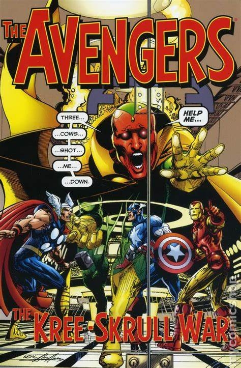

The Avengers: The Kree-Skrull War
Író: Roy ThomasKiadás:1971-1972
Roy Thomas által írt 'The Avengers: The Kree-Skrull War' (1971-1972) az Avengers csapatát az űrbéli konfliktus közepébe vezeti, ahol a Kree és Skrull fajok háborúja a Földre is kihat, létrehozva egy epikus, bonyolult szuperhősképregényt, mely a Marvel-univerzum alapköve lett.
Roy Thomas

Foglalkozása: KépregényíróSzületett:1940
Élet és Munka: Roy Thomas amerikai képregényíró és szerkesztő. Az iparágban hosszú és jelentős karrierrel rendelkezik. Híres Művei: Thomas a Marvelnél dolgozott, és ott töltötte be Stan Lee helyét, amikor az elhagyta az írói pozíciót. Olyan karakterekkel dolgozott, mint a "Conan the Barbarian," "X-Men," "Avengers" és "The Amazing Spider-Man." Örökség: Roy Thomas jelentős szerepet játszott a képregényipar történetében, és nevéhez fűződik a képregények aranykorának egyik meghatározó időszaka.